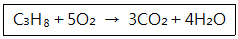

에너지관리기능사 (2015-10-10 기출문제)
1과목: 임의 구분
1. 중유의 성상을 개선하기 위한 첨가제 중 분무를 순조롭게 하기 위하여 사용하는 것은?
- 연소촉진제
- 슬러지 분산제
- 회분개질제
- 탈수제
(정답률: 74%)

2. 천연가스의 비중이 약 0.64라고 표시되었을 때, 비중의 기준은?
- 물
- 공기
- 배기가스
- 수증기
(정답률: 77%)
3. 30마력(PS)인 기관이 1시간 동안 행한 일량을 열량으로 환산하면 약 몇 kcal 인가? (단, 이 과정에서 행한 일량은 모두 열량으로 변환된다고 가정한다.)
- 14360
- 15240
- 18970
- 20402
(정답률: 58%)
4. 프로판(propane) 가스의 연소식은 다음과 같다. 프로판 가스 10kg을 완전 연소시키는데 필요한 이론산소량은?

- 약 11.6Nm3
- 약 13.8Nm3
- 약 22.4Nm3
- 약 25.5Nm3
(정답률: 49%)
5. 화염 검출기 종류 중 화염의 이온화를 이용한 것으로 가스 점화 버너에 주로 사용하는 것은?
- 플레임 아이
- 스택 스위치
- 광도전 셀
- 프레임 로드
(정답률: 73%)
6. 수위경보기의 종류 중 플로트의 위치변위에 따라 수은 스위치 또는 마이크로 스위치를 작동시켜 경보를 울리는 것은?
- 기계식 경보기
- 자석식 경보기
- 전극식 경보기
- 맥도널식 경보기
(정답률: 83%)
7. 보일러 열정산을 설명한 것 중 옳은 것은?
- 입열과 출열은 반드시 같아야 한다.
- 방열손실로 인하여 입열이 항상 크다.
- 열효율 증대장치로 인하여 출열이 항상 크다.
- 연소효율에 따라 입열과 출열은 다르다.
(정답률: 69%)
8. 보일러 액체연료 연소장치인 버너의 형식별 종류에 해당되지 않는 것은?
- 고압기류식
- 왕복식
- 유압분사식
- 회전식
(정답률: 57%)
9. 매시간 425kg의 연료를 연소시켜 4800kg/h의 증기를 발생시키는 보일러의 효율은 약 얼마인가? (단, 연료의 발열 량 : 9750kcal/kg, 증기엔탈피: 676kcal/kg, 급수온도 : 20℃이다.)
- 76%
- 81%
- 85%
- 90%
(정답률: 46%)
10. 함진가스에 선회운동을 주어 분진입자에 작용하는 원심력에 의하여 입자를 분리하는 집진장치로 가장 적합한 것은?
- 백필터식 집진기
- 사이클론식 집진기
- 전기식 집진기
- 관성력식 집진기
(정답률: 73%)
11. "1 보일러 마력"에 대한 설명으로 옳은 것은?
- 0℃의 물 539kg을 1시간에 100℃의 증기로 바꿀 수 있는 능력이다.
- 100℃의 물 539kg을 1시간에 같은 온도의 증기로 바꿀 수 있는 능력이다.
- 100℃의 물 15.65kg을 1시간에 같은 온도의 증기로 바꿀 수 있는 능력이다.
- 0℃의 물 15.65kg을 1시간에 100℃의 증기로 바꿀 수 있는 능력이다.
(정답률: 76%)
12. 연료성분 중 가연 성분이 아닌 것은?
- C
- H
- S
- O
(정답률: 71%)
13. 보일러 급수내관의 설치 위치로 옳은 것은?
- 보일러의 기준수위와 일치되게 설치한다.
- 보일러의 상용수위보다 50㎜정도 높게 설치한다.
- 보일러의 안전저수위보다 50㎜ 정도 높게 설치한다.
- 보일러의 안전저수위보다 50㎜ 정도 낮게 설치한다.
(정답률: 65%)
14. 보일러 배기가스의 자연 통풍력을 증가시키는 방법으로 틀린 것은?
- 연도의 길이를 짧게 한다.
- 배기가스 온도를 낮춘다.
- 연돌 높이를 증가시킨다.
- 연돌의 단면적을 크게 한다.
(정답률: 76%)
15. 증기의 건조도(x) 설명이 옳은 것은?
- 습증기 전체 질량 중 액체가 차지하는 질량비를 말한다.
- 습증기 전체 질량 중 증기가 차지하는 질량비를 말한다.
- 액체가 차지하는 전체 질량 중 습증기가 차지하는 질량비를 말한다.
- 증기가 차지하는 전체 질량 중 습증기가 차지하는 질량비를 말한다.
(정답률: 63%)
16. 다음 중 저양정식 안전밸브의 단면적 계산식은? (단, A=단면적(mm2), P=분출압력(kgf/cm2), E=증발량(kg/h)이다.)
- A=22E / (1.03P＋1)
- A=10E / (1.03P＋1)
- A=5E / (1.03P＋1)
- A=2.5E / (1.03P＋1)
(정답률: 58%)
17. 입형보일러에 대한 설명으로 거리가 먼것은?
- 보일러 동을 수직으로 세워 설치한 것이다.
- 구조가 간단하고 설비비가 적게 든다.
- 내부청소 및 수리나 검사가 불편하다.
- 열효율이 높고 부하능력이 크다.
(정답률: 56%)
18. 보일러용 가스버너 중 외부혼합식에 속하지 않는 것은?
- 파이럿 버너
- 센터파이어형 버너
- 링형 버너
- 멀티스폿형 버너
(정답률: 61%)
19. 보일러 부속장치인 증기 과열기를 설치 위치에 따라 분류할 때, 해당되지 않는 것은?
- 복사식
- 전도식
- 접촉식
- 복사접촉식
(정답률: 67%)
20. 가스 연소용 보일러의 안전장치가 아닌 것은?
- 가용마개
- 화염검출기
- 이젝터
- 방폭문
(정답률: 81%)
2과목: 임의 구분
21. 보일러에서 제어해야할 요소에 해당되지 않는 것은?
- 급수 제어
- 연소 제어
- 증기온도 제어
- 전열면 제어
(정답률: 70%)
22. 관류보일러의 특징에 대한 설명으로 틀린 것은?
- 철저한 급수처리가 필요하다.
- 임계압력 이상의 고압에 적당하다.
- 순환비가 1이므로 드럼이 필요하다.
- 증기의 가동발생 시간이 매우 짧다.
(정답률: 72%)
23. 보일러 전열면적 lm2 당 1시간에 발생되는 실제 증발량은 무엇인가?
- 전열면의 증발율
- 전열면의 출력
- 전열면의 효율
- 상당증발 효율
(정답률: 60%)
24. 50kg의 -10℃ 얼음을 100℃의 증기로 만드는데 소요되는 열량은 몇 kcal 인가? (단, 물과 얼음의 비열은 각각 1kcal/kg·℃, 0.5kcal/kg·℃로 한다.)
- 36200
- 36450
- 37200
- 37450
(정답률: 37%)
25. 피드 백 자동제어에서 동작신호를 받아서 제어계가 정해진 동작을 하는데 필요한 신호를 만들어 조작부에 보내는 부분은?
- 검출부
- 제어부
- 비교부
- 조절부
(정답률: 69%)
26. 중유 보일러의 연소 보조 장치에 속하지 않는 것은?
- 여과기
- 인젝터
- 화염 검출기
- 오일 프리히터
(정답률: 52%)
27. 보일러 분출 목적으로 틀린 것은?
- 불순물로 인한 보일러수의 농축을 방지한다.
- 포밍이나 프라이밍의 생성을 좋게 한다.
- 전열면에 스케일 생성을 방지한다.
- 관수의 순환을 좋게 한다.
(정답률: 82%)
28. 케리오버로 인하여 나타날 수 있는 결과로 거리가 먼 것은?
- 수격현상
- 프라이밍
- 열효율 저하
- 배관의 부식
(정답률: 59%)
29. 입형보일러 특징으로 거리가 먼 것은?
- 보일러 효율이 높다.
- 수리나 검사가 불편하다.
- 구조 및 설치가 간단하다.
- 전열면적이 적고 소용량이다.
(정답률: 53%)
30. 보일러의 점화 시 역화 원인에 해당되지 않는 것은?
- 압입통풍이 너무 약한 경우
- 프리퍼지의 불충분이나 또는 잊어버린 경우
- 점화원을 가동하기 전에 연료를 분무해 버린 경우
- 연료 공급밸브를 필요 이상 급개하여 다량으로 분무한 경우
(정답률: 61%)
31. 관속에 흐르는 유체의 종류를 나타내는 기호 중 증기를 나타내는 것은?
- S
- W
- O
- A
(정답률: 80%)
32. 보일러 청관제 중 보일러수의 연화제로 사용되지 않는 것은?
- 수산화나트륨
- 탄산나트륨
- 인산나트륨
- 황산나트륨
(정답률: 66%)
33. 어떤 방의 온수난방에서 소요되는 열량이 시간당 21000kcal이고, 송수온도가 85℃이며, 환수온도가 25℃라면, 온수의 순환량은? (단, 온수의 비열은 1kcal/kg·℃이다.)
- 324kg/h
- 350kg/h
- 398kg/h
- 423kg/h
(정답률: 56%)
34. 보일러에 사용되는 안전밸브 및 압력방출장치 크기를 20A 이상으로 할 수 있는 보일러구가 아닌 것은?
- 소용량 강철제 보일러
- 최대증발량 5T/h 이하의 관류보일러
- 최고사용압력 1MPa(10kgf/cm2) 이하의 보일러로 전열면적 5m2 이하의 것
- 최고사용압력 0.1MPa(1kgf/cm2) 이하의 보일러
(정답률: 57%)
35. 배관계의 식별 표시는 물질의 종류에 따라 달리한다. 물질과 식별색의 연결이 틀린 것은?
- 물 : 파랑
- 기름 : 연한 주황
- 증기 : 어두운 빨강
- 가스 : 연한 노랑
(정답률: 68%)
36. 다음 보온재 중 안전사용 온도가 가장 낮은 것은?
- 우모펠트
- 암면
- 석면
- 규조토
(정답률: 67%)
37. 주증기관에서 증기의 건도를 향상 시키는 방법으로 적당하지 않은 것은?
- 가압하여 증기의 압력을 높인다.
- 드레인 포켓을 설치한다.
- 증기공간 내에 공기를 제거 한다.
- 기수분리기를 사용한다.
(정답률: 60%)
38. 보일러 기수공발(carry over)의 원인이 아닌 것은?
- 보일러의 증발능력에 비하여 보일러수의 표면적이 너무 넓다.
- 보일러의 수위가 높아지거나 송기 시 증기 밸브를 급개 하였다.
- 보일러수 중의 가성소다, 인산소다, 유지분 등의 함유비율이 많았다.
- 부유 고형물이나 용해 고형물이 많이 존재 하였다.
(정답률: 61%)
39. 동관의 끝을 나팔 모양으로 만드는데 사용하는 공구는?
- 사이징 툴
- 익스팬더
- 플레어링 툴
- 파이프 커터
(정답률: 65%)
40. 보일러 분출 시의 유의사항 중 틀린 것은?
- 분출 도중 다른 작업을 하지 말 것
- 안전저수위 이하로 분출하지 말 것
- 2대 이상의 보일러를 동시에 분출하지 말 것
- 계속 운전 중인 보일러는 부하가 가장 클 때 할 것
(정답률: 86%)
3과목: 임의 구분
41. 난방부하 계산 시 고려해야 할 사항으로 거리가 먼 것은?
- 유리창 및 문의 크기
- 현관 등의 공간
- 연료의 발열량
- 건물 위치
(정답률: 63%)
42. 보일러에서 수압시험을 하는 목적으로 틀린 것은?
- 분출 증기압력을 측정하기 위하여
- 각종 덮개를 장치한 후의 기밀도를 확인하기 위하여
- 수리한 경우 그 부분의 강도나 이상 유무를 판단하기 위하여
- 구조상 내부검사를 하기 어려운 곳에는 그 상태를 판단하기 위하여
(정답률: 68%)
43. 온수난방법 중 고온수 난방에 사용되는 온수의 온도는?
- 100℃ 이상
- 80℃~90℃
- 60℃~70℃
- 40℃~60℃
(정답률: 70%)
44. 온수방열기의 공기빼기 밸브의 위치로 적당한 것은?
- 방열기 상부
- 방열기 중부
- 방열기 하부
- 방열기의 최하단부
(정답률: 85%)
45. 관의 방향을 바꾸거나 분기할 때 사용되는 이음쇠가 아닌 것은?
- 벤드
- 크로스
- 엘보
- 니플
(정답률: 74%)
46. 보일러 운전이 끝난 후, 노내와 연도에 체류하고 있는 가연성 가스를 배출시키는 작업은?
- 페일 세이프(fail safe)
- 풀 프루프(fool proof)
- 포스트 퍼지(post-purge)
- 프리 퍼지(pre-purge)
(정답률: 71%)
47. 온도 조절식 트랩으로 응축수와 함께 저온의 공기도 통과시키는 특성이 있으며, 진공 환수식 증기 배관의 방열기 트랩이나 과말 트랩으로 사용되는 것은?
- 버킷 트랩
- 열동식 트랩
- 플로트 트랩
- 매니폴드 트랩
(정답률: 68%)
48. 온수난방의 특징에 대한 설명으로 틀린 것은?
- 실내의 쾌감도가 좋다.
- 온도 조절이 용이하다.
- 화상의 우려가 적다.
- 예열시간이 짧다.
(정답률: 81%)
49. 고온 배관용 탄소강 강관의 KS 기호는?
- SPHT
- SPLT
- SPPS
- SPA
(정답률: 75%)
50. 보일러 수위에 대한 설명으로 옳은 것은?
- 항상 상용수위를 유지한다.
- 증기 사용량이 적을 때는 수위를 높게 유지한다.
- 증기 사용량이 많을 때는 수위를 얕게 유지한다.
- 증기 압력이 높을 때는 수위를 높게 유지한다.
(정답률: 78%)
51. 급수펌프에서 송출량이 10m3/min이고, 전양정이 8m일 때, 펌프의 소요마력은? (단, 펌프 효율은 75%이다.)
- 15.6PS
- 17.8PS
- 23.7PS
- 31.6PS
(정답률: 41%)
52. 증기난방 배관에 대한 설명 중 옳은 것은?
- 건식환수식이란 환수주관이 보일러의 표준수위보다 낮은 위치에 배관되고 응축수가 환수주관의 하부를 따라 흐르는 것을 말한다.
- 습식환수식이란 환수주관이 보일러의 표준수위보다 높은 위치에 배관되는 것을 말한다.
- 건식 환수식에서는 증기트랩을 설치하고, 습식 환수식에서는 공기빼기 밸브나 에어포켓을 설치한다.
- 단관식 배관은 복관식 배관보다 배관의 길이가 길고 관경이 작다.
(정답률: 61%)
53. 사용 중인 보일러의 점화 전 주의사항으로 틀린 것은?
- 연료 계통을 점검한다.
- 각 밸브의 개폐 상태를 확인한다.
- 댐퍼를 닫고 프리퍼지를 한다.
- 수면계의 수위를 확인한다.
(정답률: 85%)
54. 다음 중 보일러의 안전장치에 해당되지 않는 것은?
- 방출밸브
- 방폭문
- 화염검출기
- 감압밸브
(정답률: 70%)
55. 에너지이용 합리화법에 따른 열사용기자재 중 소형온수 보일러의 적용 범위로 옳은 것은?
- 전열면적 24m2 이하이며, 최고사용압력이 0.5MPa 이하의 온수를 발생하는 보일러
- 전열면적 14m2 이하이며, 최고사용압력이 0.35MPa 이하의 온수를 발생하는 보일러
- 전열면적 20m2 이하인 온수보일러
- 최고사용압력이 0.8MPa 이하의 온수를 발생하는 보일러
(정답률: 81%)
56. 에너지이용 합리화법상 목표에너지원 단위란?
- 에너지를 사용하여 만드는 제품의 종류별 연간 에너지사용목표량
- 에너지를 사용하여 만드는 제품의 단위당 에너지사용목표량
- 건축물의 총 면적당 에너지사용목표량
- 자동차 등의 단위연료 당 목표주행거리
(정답률: 72%)
57. 저탄소 녹색성장 기본법령상 관리업체는 해당 연도 온실가스 배출량 및 에너지 소비량에 관한 명세서를 작성하고, 이에 대한 검증기관의 검증 결과를 부문별 관장기관에게 전자적 방식으로 언제까지 제출하여야 하는가?
- 해당 연도 12월 31일 까지
- 다음 연도 1월 31일 까지
- 다음 연도 3월 31일 까지
- 다음 연도 6월 30일 까지
(정답률: 51%)
58. 에너지이용 합리화법 시행령에서 에너지다소비사업자라 함은 연료·열 및 전력의 연간 사용량 합계가 얼마 이상인 경우인가?
- 5백 티오이
- 1천 티오이
- 1천5백 티오이
- 2천 티오이
(정답률: 77%)
59. 에너지이용 합리화법상 에너지소비효율 등급 또는 에너지 소비효율을 해당 효율관리 기자재에 표시할 수 있도록 효율관리 기자재의 에너지 사용량을 측정하는 기관은?
- 효율관리진단기관
- 효율관리전문기관
- 효율관리표준기관
- 효율관리시험기관
(정답률: 65%)
60. 에너지이용 합리화법상 법을 위반하여 검사대상기기조종자를 선임하지 아니한 자에 대한 별칙기준으로 옳은 것은?
- 2년 이하의 징 역 또는 2천만 원 이하의 벌금
- 2천만 원 이하의 벌금
- 1천만 원 이하의 벌금
- 500만 원 이하의 벌금
(정답률: 79%)